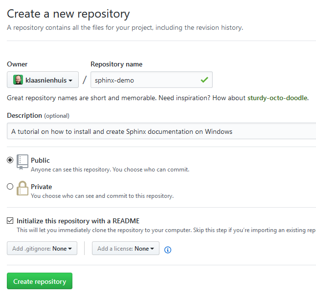
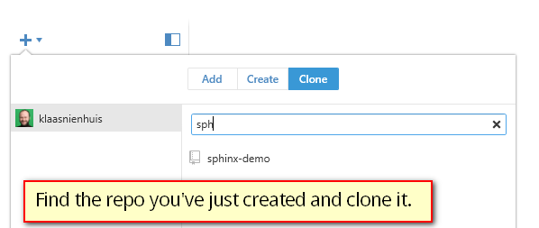
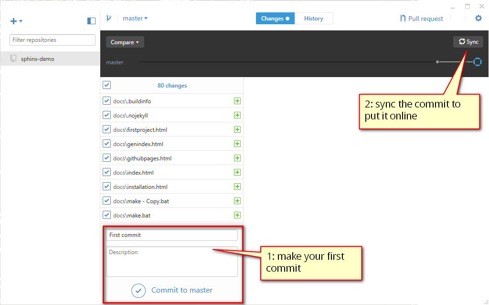
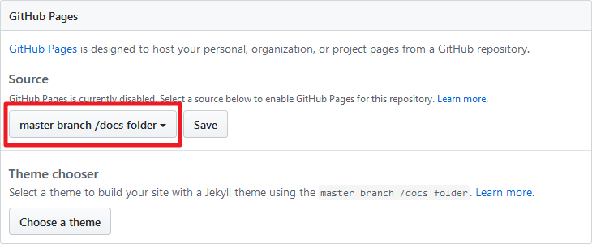

Github Pages¶
Writing docs is fine and dandy, but people need to read it. You can host your docs yourself, since it’s just html. But why host it yourself when github will host it for you, for free?
To get this working you’ll need a github account. Check out how that works here. You’ll need to take care of your folder structure. You can either put the index file of your docs in a docs folder, or use a separate branch for the documentation.
Also keep in mind that after uploading your documentation to github, it might take up to 10 minutes to generate the site. Be patient! Also essential is that there’s a nojekyll file in your build. This should have been created when you used the quickstart (Your first project) and chose that setting.
Create a Github repository¶
There are several ways to get started with Github, but you’ll have to create an account and create a repository. I’ve made a public repo like so
Create a new github repository
Clone the repo¶
With any github client, or with the git commandline, you can clone the repository to your local machine (where you’re writing the documentation). Github will ask you where to clone the repo to.
Once the repo has been cloned, move your documentation files to the folder. Make sure the index.html file is in the docs folder. This is what github expects when making the pages.
When your github client is connected, you can easily clone the repository you just made online
Once the repository has been cloned (it should be an empty folder) you can copy the documentation files into it. You can make your first commit after that. And once committed, push it to github.
The first commit and sync
Setup for pages¶
Now that we’ve pushed the documentation to github we can set it up for hosting it as a regular webpage. First make sure that you actually have a docs folder in the root of your repository and that in there the built documentation sits. It shouldn’t be in a subfolder, but directly in the docs folder.
Then, got to your repo on github.com and go to the settings. Scroll down to the github pages section and pick the suggested option in the screenshot.
The first commit and sync
Once that’s saves, the pages should show you the url for the documentation. In my case it’s https://klaasnienhuis.github.io/sphinx-demo Keep in mind it can take a few minutes to get going. If it doesn’t make sure your index.html is directly in the docs folder and that there’s a nojekyll file.